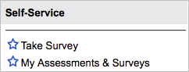
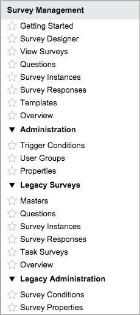

Survey Management
| |
Note: This article applies to Fuji and earlier releases. For more current information, see Get Started with Survey Management at http://docs.servicenow.com
The ServiceNow Wiki is no longer being updated. Visit http://docs.servicenow.com for the latest product documentation. |
Contents
1 Overview
The survey feature allows you to create, send, and collect responses for basic surveys quickly and easily. There are also many options for advanced configuration. Some of the many things you can do with surveys include:
- Create a survey, add questions, and choose recipients, all in one interface.
- Create conditional questions, which appear only when users answer other questions a certain way.
- Restrict a survey so only specific survey users can take it and send all of them invitations simultaneously.
- Set a schedule to automatically assign a survey to users and to limit how often the same user can take a survey.
- Customize the look and feel of survey questionnaires.
- Save anonymous survey responses.
- Convert survey responses to numerical scores and view them on scorecards.
- Deactivate a survey for maintenance or to retire it without deleting it.
Surveys are available in the base system as an alternative to legacy surveys starting with the Eureka release. Surveys provide the same basic functionality as legacy surveys and include extended capabilities. Survey administrators can continue to use legacy survey functionality and data. However, the recommended course of action is to migrate legacy surveys to the survey platform. Concurrent use of both features can lead to confusion and redundancy. Note that survey wizards are not impacted and cannot be migrated.
| |
Note: Surveys use the same tables and other back-end components as assessments. Due to the shared nature of these features, you may see assessment elements such as table and field names in certain places throughout the survey feature. |
2 Version Comparison
| Capability | Survey Management | Legacy Surveys | ||
|---|---|---|---|---|
| Save new survey responses each time a user takes the same survey. | |
| ||
| Create question templates to reuse sets of answer options. | |
| ||
| Categorize survey questions and report on category results. | |
|||
| Deactivate a survey without deleting it. | |
|||
| Create conditional questions. | |
|||
| Send surveys automatically on a schedule. | |
|||
| Customize survey questionnaire color scheme. | |
|||
| Save anonymous survey responses for logged-in users. | |
|||
| View survey responses on graphical scorecards. | |
|||
| Save surveys in a draft state until they are ready to publish. | |
|||
| Create and send surveys from one page. | |
|||
| Allow only specific users to access a survey. | |
|||
| Send surveys based on conditions. | |
| ||
| Send survey email notifications. | |
| ||
| Limit how often a user can take the same survey. | |
| ||
| Add introduction and end note text. | |
| ||
| Create survey modules. | |
| ||
Allow people to take a survey without logging in.
|
|
3 Key Terms
- Survey definition: the root record on which a survey is built. Contains information like the survey name, state, and distribution schedule. Each survey definition has its own categories and questions. Survey definitions are comparable to legacy survey masters.
- Survey category: represents a theme for survey questions. Categories contain one or more questions. The system creates one category per survey by default. Additional categories are optional.
- Survey question: a question that appears on survey questionnaires for the associated survey definition. Survey questions are comparable to legacy survey questions.
- Survey user: a user who is authorized to receive invitations for a restricted survey.
- Survey instance: represents one survey questionnaire assigned to one user. Survey instances are comparable to legacy survey instances.
- Trigger condition: defines a rule that enables the system to send a survey when an action occurs on a table, such as when an incident closes. Trigger conditions are comparable to legacy survey conditions.
- Scorecard: provides a visual breakdown of survey responses. Scorecards display a variety of data summaries for one survey definition.
4 Setup Procedure
Use the following procedure to set up basic surveys as quickly as possible. For information about additional configuration options, see Fine-Tuning Surveys.
- [Optional] Create any survey question templates or survey user groups you want to use for the survey.
- Use the survey creator to quickly create a basic survey.
- The survey creator lets you set survey preferences, add questions, and choose a delivery method all in one place. You can:
- Make the survey public for all users to take. The survey creator provides a URL that you can distribute to users.
- Restrict survey access so only certain users can take it.
- Configure the system to send the survey automatically based on trigger conditions.
- The survey creator lets you set survey preferences, add questions, and choose a delivery method all in one place. You can:
- Publish the survey when it is ready for users to take it.
- You can publish the survey immediately from the survey creator or later from the Survey Definition form.
- Use one of the many methods to share the survey with users.
- View responses.
5 Roles
The Survey Management application uses the following roles. No role is required to take survey questionnaires that are assigned to you.
| Role Title | Role Name | Description |
|---|---|---|
| Survey administrator | survey_admin | Survey administrators create and administer surveys. They know what topics to create surveys for, when to send each survey, and who to assign surveys to. Survey administrators can use all modules in the Survey Management application menu. The survey_admin role contains the survey_reader and assessment_admin roles. |
| Survey reader | survey_reader | Survey readers view surveys and related information, such as survey responses, survey groups, scorecards, and reports. |
| Administrator | admin | Administrators have access to all aspects of the survey process. Only administrators can modify survey notifications, create survey modules, and import surveys. |
6 Menus and Modules
The Survey Management application menu replaces the Survey application menu (starting with the Eureka release). The modules from the Survey application menu are moved to the Survey Management application menu and marked as legacy features.
The following survey modules are available:
|  | Under the Self-Service menu:
|
|  | Under the Survey Management menu:
|
{kind=link}
{kind=link}
7 Enhancements
7.1 Fuji
- Administrators can present assertions on a survey that contain requirements, admonitions, or policies related to the questions, and then require recipients to certify with a signature that they have read and complied with these expectations.
- The survey designer provides a single interface for creating, editing, and distributing surveys. Microsoft Internet Explorer browsers at version 8 or earlier are incompatible with the designer and are redirected to the Eureka survey creator instead.